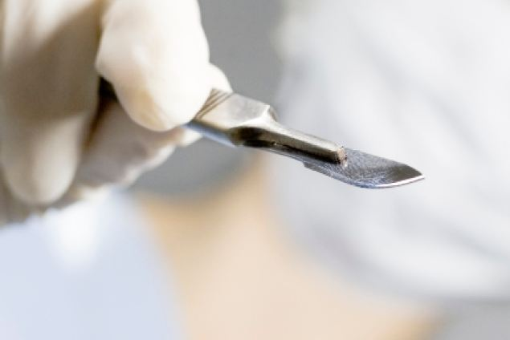

Anesthesia: Under the Knife
Scrutinizing Its Side Effects
Tina Xu
Spring 2009

Anesthesia allows human beings to walk the precarious line between life
and death. It acts as one of our most vital allies in the medical
world, suppressing the natural pain signals our bodies generate to warn
us of foreign invasion. General anesthetic (GA) drugs inhibit the
perception of pain in patients during surgical procedures through
interactions with the surface proteins of nerve cells. However,
researchers have recently identified a specific protein ion channel
that chemically interacts with GA molecules and stimulates neurons to
send increased pain signals to the brain, counteracting the normal
effect of anesthesia.
Anesthesia has come a long way since it was first
introduced in 1846 by William Morton, MD, at Massachusetts General
Hospital. GAs inhibit neuronal communication, slowing or blocking the
flow of information to the brain. Neural signals are propagated through
the intricate network of neurons by chemical interactions in the narrow
regions between neural cells. GAs manipulate neural signals between
cells to achieve sedation, unconsciousness, immobility, and amnesia,
making them useful in surgical settings.
In 2007, postdoctoral student Jose Matta, BS, and
his colleagues at Georgetown University identified a surface protein,
called TRPA1, on nerve cells in the peripheral nervous system (PNS).
The nervous system consists of two main components: the central nervous
system (CNS) and the PNS. The CNS includes the brain and the spinal
cord, while the PNS is comprised of neurons that branch off to organs
and tissues. The PNS controls muscle movements and acts as the
messenger between the brain and the body’s organs. Various GAs can
activate TRPA1, which generates pain signals and may cause magnified
postoperative pain. Normally, GAs specialize mainly in “silencing” the
CNS, enabling the patient to go undergo invasive surgery peacefully.
Unfortunately, the drugs can have a double effect on
the CNS and PNS. While the CNS is suppressed, the PNS is activated and
signals – such as those for pain sensory pathways to the brain – are
delayed until the suppressive actions of the GAs have ceased, resulting
in the excessive postoperative pain.
Matta and his colleagues identified the
specific protein, TRPA1, as the ion channel that alters the membrane
potential resulting from an electrical charge difference across the
membrane of nerve cells to generate a synapse that eventually
communicates pain sensations to the brain. In experiments with mouse
cells, neurons from wild-type mice with the TRPA1 gene, activated by
both inhalant and intravenous GAs, continued to exhibit electrical
currents. In addition, wild-type mice displayed irritable behavior when
Matta applied the GA propofol to the surface of their nasal cavities,
while the mutants lacking the TRPA1 gene showed no response. These
results show that the activity of TRPA1 may be the reason why some
patients experience a burning pain before the surgical procedure when
they are injected with propofol.
This discovery by Matta and his team is a reminder
of the imperfections of anesthesia and how much room there exists for
improvement. While GAs effectively suppress the pain during surgical
procedures, there are still many uncontrollable side effects.
Hopefully, as further research reveals more about the mechanisms of
anesthesia, the side effects can be eliminated and patients would not
have to worry about recovering from both the effects of surgery and GA
drugs.
About the Author
Tina Xu is a third year Integrative Biology major who plans on pursuing a Masters of Public Health and attending medical school.